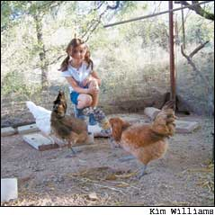
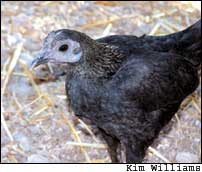
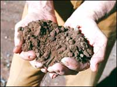
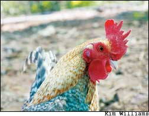
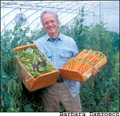

My daughter is in love. She’s only 5 years old, but this is real. Her beau is shorter than she is, by a wide margin, and she couldn’t care less. He has dark eyes, a loud voice and a tendency to crow. He also has five girlfriends, but Lily doesn’t care about that, either. She loves them all: Mr.oodle, Jess, Bess, Mrs. Zebra, Pixie and Kiwi. They’re chickens. Lily likes to sit on an overturned bucket and sing to them in the afternoons. She has them eating out of her hand.
It began with coveting our neighbor’s chickens. Lily would volunteer to collect the eggs, and then she offered to move in with them. Not the neighbors, the chickens. She said if she could have some of her own, she would be the happiest girl on earth. What parent could resist this bait? Our lifestyle could accommodate a laying flock; my husband and I had kept poultry before, so we knew it was a project we could manage, and a responsibility Lily could handle largely by herself. I understood how much that meant to her when I heard her tell her grandmother, “They’re going to be just my chickens, Grandma. Not even one of them will be my sister’s.” To be 5 years old and have some other life form entirely under your control - not counting goldfish or parents - is a majestic state of affairs.
So her dutiful father built a smart little coop right next to our large garden enclosure, and I called a teenage friend who might, I suspected, have some excess baggage in the chicken department. She raises championship show chickens, and she culls her flock tightly. At this time of year she’d be eyeing her young birds through their juvenile molt to be sure every feather conformed to the gospel according to the chicken-breeds handbook, which is titled, I swear, The Standard of Perfection. I asked if she had a few feather-challenged children that wanted adoption, and she happily obliged. She even had an adorable little bantam rooster that would have caused any respectable chicken-show judge to keel over - the love child of a Rose-comb and a Wyandotte. I didn’t ask how it happened.
In Lily’s eyes this guy, whom she named Mr.oodle, was the standard of perfection. We collected him and a motley harem of sweet little hens in a crate and brought them home. They began to scratch around contentedly right away, and Lily could hardly bear to close her eyes at night on the pride she felt at poultry ownership. Every day after feeding them she would sit on her overturned bucket and chat with them about the important things. She could do this for an hour, easily, while I worked nearby in the garden. We discovered that they loved to eat the weeds I pulled, and the grasshoppers I caught red-handed eating my peppers. We wondered, would they even eat the nasty green hornworms that are the bane of my tomato plants? Darling, replied Mrs. Zebra, licking her nonlips, that was to die for.
I soon became so invested in pleasing the hens, along with Lily, that I would let a fresh green pigweed grow an extra day or two to get some size on before pulling it. And now, instead of carefully dusting my tomato plants with Bacillus spores (a handy bacterium that gives caterpillars a fatal bellyache), I allow the hornworms to reach heroic sizes, just for the fun of throwing the chickens into conniptions. Growing hens alongside my vegetables, and hornworms and pigweeds as part of the plan, has drawn me more deeply into the organic cycle of my gardening that is its own fascinating reward.
With the coop built and chickens installed, all we had to do now was wait for our flock to pass through puberty and begin to give us our daily eggs. We were warned it might take awhile because they would be upset by the move and would need time for emotional adjustment. I was skeptical about this putative pain and suffering; it is hard to put much stock in the emotional life of a creature with an IQ of an eggplant. Seems to me you put a chicken in a box, and she looks around and says, “Gee, life is a box.” You take her out, she looks around and says, “Gee, it’s sunny here.” But sure enough, they took their time. Lily began each day with high hopes, marching out to the coop with cup of corn in one hand and my 20-year-old wire egg-basket in the other. She insisted that her dad build five nest boxes in case they all suddenly got the urge at once. She fluffed up the straw in all five nests, nervous as a bride preparing her boudoir.
I was looking forward to the eggs, too. To anyone who has eaten an egg just a few hours’ remove from the hen, those white ones in the store have the charisma of day-old bread. I looked forward to organizing my family’s meals around the pleasures of quiches, Spanish tortillas and soufflés, with a cupboard that never goes bare. We don’t go to the grocery very often; our garden produces a good deal of what we eat, and in some seasons nearly all of it. This is not exactly a hobby. It’s more along the lines of religion, something we believe in the way families believe in patriotism and loving thy neighbor as thyself. If our food ethic seems an unusual orthodoxy to set alongside those other two, it probably shouldn’t. We consider them to be connected.
Globally speaking, I belong to the 20 percent of the world’s population - and chances are you do, too - that uses 67 percent of the planet’s resources and generates 75 percent of its pollution and waste. This doesn’t make me proud. U.S. citizens by ourselves, comprising just 5 percent of the world’s people, use a quarter of its fuels. An average American gobbles up the goods that would support 30 citizens of India. Much of the money we pay for our fuels goes to support regimes that treat their people - particularly their women - in ways that make me shudder. I’m a critic of this shameful contract, and of wasteful consumption, on general principles. Since it’s nonsensical, plus embarrassing, to be an outspoken critic of things you do yourself, I set myself long ago to the task of consuming less. I never got to India, but in various stages of my free-wheeling youth I tried out living in a tent, in a commune and in Europe, before eventually determining that I could only ever hope to dent the salacious appetites of my homeland and make us a more perfect union by living inside this amazing beast, poking at its belly from the inside with my one little life and the small pointed sword of my pen. So this is where I feed my family and try to live lightly on the land.
The Union of Concerned Scientists notes that there are two main areas where U.S. citizens take a hoggish bite out of the world’s limited resources and fuels. First is transportation. Anybody would guess this. Area number two, and this may surprise you, is our diet. Americans have a taste for food that’s been seeded, fertilized, harvested, processed and packaged in grossly energy-expensive ways and then shipped, often refrigerated, for so many miles it might as well be green cheese from the moon. Even if you walk or bike to the store, if you come home with bananas from Ecuador, tomatoes from Holland, cheese from France and artichokes from California, you have guzzled some serious gas. This extravagance that most of us take for granted is a stunning energy boondoggle: Transporting 5 calories’ worth of strawberry from California to New York costs 435 calories of fossil fuel. The global grocery store may turn out to be the last great losing proposition of our species.
Most Americans are entangled in a car dependency not of our own making, but nobody has to eat foods out of season from Rio de Janeiro. It’s a decision we remake daily, and an unnecessary kind of consumption that I decided some time ago to try to expunge from my life. I had a head start because I grew up among farmers and have found since then that you can’t take the country out of the girl. Wherever I’ve lived, I’ve gardened, even when the only dirt I owned was a planter box on an apartment balcony. I’ve grown food through good times and bad, busy and slow, richer and poorer - especially poorer. When people protest that gardening is an expensive hobby, I suggest they go through their garden catalogs and throw out the ones that offer footwear and sundials. Seeds cost pennies apiece or less. For years I’ve grown much of what my family eats and tried to attend to the sources of the rest. As I began to understand the energy crime of food transportation, I tried to attend even harder, eliminating any foods grown on the dark side of the moon. I began asking after the processes that brought each item to my door: what people had worked where, for slave wages and with deadly pesticides; what places had been deforested; what species were being driven extinct for my cup of coffee or banana bread. It doesn’t taste so good when you think about what died going into it.
Responsible eating is not so impossible as it seems. I was encouraged in my quest by This Organic Life, a compelling book by Joan Dye Gussow that tells how, and more important, why, she aspired to and achieved vegetable self-sufficiency. She does it in her small back yard in upstate New York, challenging me to make better use of my luxuries of larger space and milder clime. Sure enough, she’s right. In the years since I started counting, I’ve found I need never put a vegetable on my table that has traveled more than an hour or so from its home ground to ours.
Nearly every vegetable we consume, we can grow ourselves. Most of whatever else I need comes from the local growers I meet at farmer’s markets. Our family has arrived, as any sentient people would, at a strong preference for the breads and pasta we make ourselves, so I’m always searching out proximate sources of organic flour. Just by reading labels, I have discovered I can buy milk that comes from organic dairies only a few counties away; in season I can often get it from my neighbors, in exchange for vegetables; and I’ve become captivated by the alchemy of creating my own cheese and butter. (Butter is a sport; cheese is an art.) Winemaking remains well beyond my powers, but fortunately good wine is made in Virginia, and I am especially glad to support some neighbors in a crashing tobacco-based economy who are trying to hold on to their farms by converting them to vineyards. Somewhere near you, I’m sure, is a farmer who desperately needs your support, for one of a thousand reasons that are pulling the wool out of the proud but unraveling traditions of family farming.
I am trying to learn about this complicated web as I go, and I’m in no position to judge anyone else’s personal habits, believe me. My life is riddled with energy inconsistencies: We try hard to conserve, but I’ve found no way as yet to rear and support my family without a car, a computer, the occasional airplane flight,
a teenager’s bathroom equipped with a hair dryer, et cetera. I’m no Henry D. Thoreau. (And just for the record, for all his glorification of his bean patch, Henry is known habitually to have gone next door to eat Mrs. Ralph W. Emerson’s cooking.) Occasional infusions of root beer are apparently necessary to my family’s continued life, along with a brand of vegetable chips made in Uniondale, N.Y. And there’s no use in my trying to fib about it, either, for it’s always when I have just these items in the grocery cart, and my hair up in the wackiest of slapdash ponytails, that some kind person in the checkout line will declare, “Oh, Ms. Kingsolver, I just love your work!”
Our quest is only to be thoughtful and simplify our needs, step by step. In the way of imported goods, I try to stick to nonperishables that are less fuel-costly to ship: rice, flour and coffee are good examples. Just as simply as I could buy coffee and spices from the grocery, I can order them through a collective in Fort Wayne, Ind., that gives my money directly to cooperative farmers in Africa and Central America who are growing these crops without damaging their tropical habitat. We struggled with the notion of giving up coffee altogether until we learned from ornithologist friends who study migratory birds being lost to habitat destruction, that there is a coffee-cultivation practice that helps rather than hurts. Any coffee labeled “shade grown” - now available in most North American markets - was grown under rain-forest canopy on a farm that is holding a piece of jungle intact, providing subsistence for its human inhabitants and its birds.
I understand the power implicit in these choices. That I have such choices at all is a phenomenal privilege in a world where so many go hungry, even as our nation uses food as a political weapon, embargoing grain shipments to places such as Nicaragua and Iraq. I find both security and humility in feeding myself as best I can, and learning to live within the constraints of my climate and seasons. I like the challenge of organizing our meals as my grandmothers did, starting with the question of season and which cup is at the moment running over. I love to trade recipes with my gardening friends, and join in their cheerful competition to see who can come up with the most ways to conceal the identity of a zucchini squash.
If we are blessed with an abundance of choices about food, we are surely also obliged to consider the responsibility implicit in our choices. There has never been a more important time to think about where our food comes from. We could make for ourselves a safer nation, overnight, simply by giving more support to our local food economies and learning ways of eating and living around a table that reflects the calendar. Our families, of course, will never need to be as beholden to the seasons as the Native Americans who called February by the name “Hungry Month,” and I’m grateful for that. But we can try to live close enough to the land’s ordinary time that we notice when something is out of place and special. My grandfather Kingsolver used to tell me with a light in his eyes about the boxcar that came through Kentucky on the L&N line when he was a boy - only once a year, at Christmas - carrying oysters and oranges from the coast. Throughout my own childhood, every year at Christmastime while an endless burden of wants burgeoned around everybody else, my grandfather wanted only two things: a bowl of oyster soup and an orange. The depth of his pleasure in that meal was so tangible, even to a child, that my memory of it fills me with wonder at how deeply fulfillment can blossom from a cultivated ground of restraint.
I remember this as I struggle - along with most parents I know - to make clear distinctions between love and indulgence in raising my children. I honestly believe that material glut can rob a child of certain kinds of satisfaction - though deprivation is no picnic, either. And so our family indulges in exotic treats on big occasions. A box of Portuguese clementines one Christmas is still on Lily’s catalog of favorite memories, and a wild turkey we got from Canada one Thanksgiving remains on my own. We enjoy these kinds of things spectacularly because at our house they’re rare.
And yes, we eat some animals, in careful deference to the reasons for avoiding doing so. I don’t really feel, as some have told me, that it’s a sin to eat anything with a face, nor do I believe it’s possible to live by that rule unless one maintains a certain degree of purposeful ignorance. Butterflies and bees and locusts all have faces, and they die like lambs to the slaughter (and in greater numbers) whenever a field of vegetable food is sprayed or harvested. Faceless? Not the birds that eat the poisoned insects, the bunnies sliced beneath the plow, the foxes displaced from the forest-turned-to-organic-wheat field, and so on. If the argument is that meat comes from higher orders of life than those creatures, I wonder how the artificial, glassy-eyed construct of a bovine life gets to weigh more than the wiles of a fox or the virtuosity of a songbird. Myself, I love wild lives at least as much as tame ones, and eating costs lives. Even organic farmers kill crop predators in ways that aren’t pretty, so a vegetable diet doesn’t provide quite the sparkling karma one might wish. Most soybeans grown in this country are genetically engineered in ways that are anathema to biodiversity. So drinking soy milk, however wholesome it may be, doesn’t save animals.
No, it’s the other savings that compel me most toward a vegetable-based diet - the ones revealed by simple math. A pound of cow or hog flesh costs about 10 pounds of plant matter to produce. So a field of grain that would feed 100 people, when fed instead to cows or pigs that are then fed to people, fills the bellies of only 10 of them; the other 90, I guess, will just have to go hungry. That, in a nutshell, is how it’s presently shaking down with the world, the world’s arable land, and the world’s hamburger eaters.
Some years ago our family took a trip across the Midwest to visit relatives in Iowa, and for thousands of miles along the way we saw virtually no animal life except feedlots full of cattle - surely the most unappetizing sight and smell I’ve encountered in my life (and my life includes some years of intimacy with diaper pails). And we saw almost no plant life but the endless fields of corn and soybeans required to feed those pathetic penned beasts. Our kids kept asking mile after mile, “What used to be here?” It led to long discussions of America’s vanished prairie, Mexico’s vanished forests and the diversity of species in the South American rain forests that are now being extinguished to make way for more cattle graze. We also talked about a vanishing American culture: During the last half century or so, each passing year has seen about half a million more people move away from farms (including all of my children’s grandparents or great-grandparents). The lively web of farmhouses, schoolhouses, pasture lands, woodlots, livestock barns, poultry coops and tilled fields that once constituted America’s breadbasket has been replaced with a meat-fattening monoculture. When we got home our daughter announced firmly, “I’m never going to eat a cow again.”
When your 10-year-old calls your conscience to order, you show up: She hasn’t eaten a cow since, and neither have we. It’s an industry I no longer want to get tangled up in, even at the level of the 99-cent exchange. Each and every quarter pound of hamburger is handed across the counter after the following productions costs, which I’ve searched out precisely: 100 gallons of water, 1.2 pounds of grain, a cup of gasoline, greenhouse-gas emissions equivalent to those produced by a six-mile drive in your average car, and the loss of 1.25 pounds of topsoil, every inch of which took 500 years for the microbes and earthworms to build. How can all this cost less than a dollar, and who is supposed to pay for the rest of it? If I were a cow, right here is where I’d go mad.
Thus our family parted ways with all animal flesh wrought from feedlots. But for some farmers on certain land, assuming that they don’t have the option of turning their acreage into a national park (and that people will keep wanting to eat), the most ecologically sound use of it is to let free-range animals turn its grass and weeds into edible flesh, rather than turning it every year under the plow. We also have neighbors who raise organic beef for their family on hardly more than the byproducts of other things they grow. It’s quite possible to raise animals sustainably, and we support the grass-based farmers around us by purchasing their chickens and eggs.
Or we did, that is, until Lily got her chickens. The next time a roasted bird showed up on our table she grew wide-eyed, set down her fork, and asked, “Mama ... is that ... Mr.oodle?”
I reassured her a dozen times that I would never cook Mr.oodle; this was just some chicken we didn’t know. But a lesson had come home to, well, roost. All of us sooner or later must learn to look our food in the face. If we’re willing to eat an animal, it’s probably only responsible to accept the truth of its living provenance rather than pretending it’s a “product” from a frozen foods shelf with its gizzard in a paper envelope. I’ve been straight with my kids ever since the first one leveled me with her eye and said, “Mom, no offense, but I think you’re the Tooth Fairy.” So at dinner that night we talked about the biology, ethics and occasional heartbreaks of eating food. I told Lily that when I was a girl growing up among creatures I would someday have to eat, my mother had promised we would never butcher anything that had a first name. Thereafter I was always told from the outset which animals I could name. I offered Lily the same deal.
So she made her peace with the consumption of her beloveds’ nameless relatives. We still weren’t sure, though, how we’d fare when it came to eating their direct descendants. We’d allowed that next spring she might let a hen incubate and hatch out a few new chicks (Lily quickly decided on the precise number she wanted and, significantly, their names), but we stressed that we weren’t in this business to raise 10,000 pets. Understood, said Lily. So we waited a week, then two, while Jess, Bess and company worked through their putative emotional trauma and settled in to laying. We wondered, how will it go? When our darling 5-year-old pantheist, who believes that even stuffed animals have souls, goes out there with the egg basket one day and comes back with eggs, how will we explain to her that she can’t name those babes, because we’re going to scramble them?
Here is how it went: She returned triumphantly that morning with one unbelievably small brown egg in her basket, planted her feet on the kitchen tile, and shouted at the top of her lungs, “Attention, everybody. I have an announcement: FREE BREAKFAST.”
We agreed that the first one was hers. I cooked it to her very exact specifications, and she ate it with gusto. We admired the deep red-orange color of the yolk, from the beta carotenes in those tasty green weeds. Lily could hardly wait for the day when all of us would sit down to a free breakfast, courtesy of her friends. I wish that every child could feel so proud, and every family could share the grace of our table.
Barbara Kingsolver’s 11 books include essay collections, short stories, poetry, an oral history, and many well-known novels including The Bean Trees and The Poisonwood Bible. She and her husband, Steven Hopp, and their two daughters grow most of their own food on a farm in the southern Appalachian Mountains.Visit her Web site, www.kingsolver.com.
By Eliot Coleman
Through the years, as organic farmers have worked with the world of nature, they have developed harmonious farming practices that are outstandingly productive. The general level of expertise today among the best organic growers allows them to equal chemical agriculture in yield while far surpassing it in quality. Coincidentally, they discovered that this approach to farming could save not only their soil, but the family farm itself. It is this original organic goal, and not the modern labeling requirements of the U.S.epartment of Agriculture, which I believe can save the family farm. To better convey this idea, I like to borrow a phrase from the ecology movement and refer to “deep“ organic farming.
Deep-organic farmers, after rejecting agricultural chemicals, look for better ways to farm. Inspired by the elegance of nature’s systems, they try to mimic the patterns of the natural world’s soil-plant economy. They use freely available natural soil foods such as deep-rooting legumes, green manures and composts to correct the causes of an infertile soil by establishing a vigorous soil life. They acknowledge that the underlying cause of pest problems (insects and diseases) is plant stress; they know they can avoid pest problems by managing soil tilth, nutrient balance, organic matter content, water drainage, air flow, crop rotations, varietal selection and other factors to reduce plant stress.
Deep-organic farmers free themselves from the need to purchase fertilizers and pest-control products from the industrial supply network - the commercial network that normally puts profits in the pockets of middlemen and puts family farms on the auction block. The goal of deep-organic farming is to grow the most nutritious food possible and to respect the primacy of a healthy planet. Needless to say, the industrial agricultural establishment sees this approach as a threat to the status quo since it is not an easy system for outsiders to quantify, to control and to profit from.
So what is the future? If you want to eat really good food, support your local deep-organic farmers. Committed growers are engaged in a quest to grow better food because they understand that Real Food makes an enormous contribution to human well-being.
Reprinted from The Rake (www.rakemag.com), Sept. 2004.
|
 Barbara Kingsolver’s daughter Lily feeds her chickens. The family raises much of their own food, including fresh eggs and produce from a large garden. |
 Above: Kiwi, one of Lily’s favorite chickens. |
 Mr. Pepper, another valued member of Lily’s flock. |
|
 Eliot Coleman |
 |
|